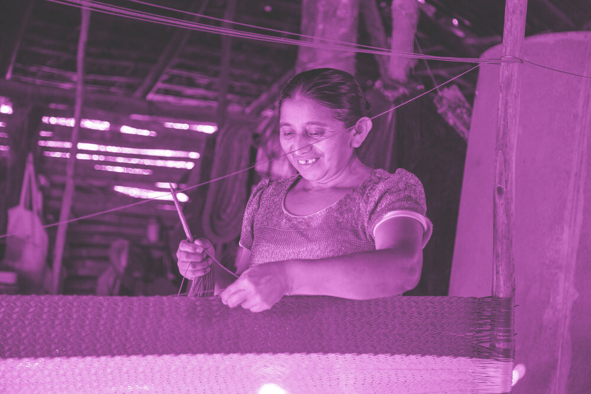

LA MITAD DE LOS MIGRANTES TRABAJAN EN LA MISMA OCUPACIÓN EN SU DESTINO FINAL
PERFILES
Desplázate Hacia Abajo para Saber Más
El 69% de los Migrantes son Hombres
La gran mayoría—87% de los hogares encuestados—comunicaron estar satisfechos con el lugar en donde viven. La intención de migrar está impulsada, en gran medida, por la necesidad y el deseo de obtener mejores condiciones económicas.
La Migración Genera Separación Familiar
El 13% de los migrantes recientes son menores de entre 0 y 17 años. Muchos migrantes optan por dejar a sus hijos con familiares para protegerlos del peligroso viaje.
El 55% se Encuentran en su Mejor Edad Laboral
Personas de entre 18 y 34 años representaron el 55% de los migrantes recientes. Este número es conformado por adultos en edad ideal para trabajar, contribuyendo a una pérdida significativa de la población laboral productiva en los países de origen centroamericanos.
La Fuerza Laboral de Estados Unidos Necesita a los Migrantes
Los trabajadores nacidos en el extranjero representan el 73% de todos los trabajadores agrícolas empleados en EE. UU. en el año fiscal 2016; aproximadamente la mitad de todos los trabajadores agrícolas contratados eran inmigrantes no autorizados. México es la fuente trabajadores migrantes en las granjas de EE. UU., los centroamericanos representaron el 6% de los trabajadores migrantes de cultivos contratados en EE. UU. Entre los años fiscales 2015-2016. * La visa de trabajo agrícola ha mejorado las vías regulares de migración para los mexicanos. Pero los países centroamericanos necesitan un mayor acceso al mercado laboral estadounidense con vías que les ayuden a adquirir tales visas.
* USDOL. Características demográficas y de empleo, cuadro 1., FY 2015-2016.[referencia externa]
Ocupación Antes
de Migrar
Ocupación Después
de Migrar

Agricultura
Ocupación Antes de Migrar
Agricultura
País de Origen
El Salvador
Ocupación Después de Migrar
Empleo Informal
País de Destino
Estados Unidos
SÓLO UN 57% DE LOS MIGRANTES RESIDEN EN EL DESTINO DESEADO
CONCECUENCIAS
HAGA CLIC AQUÍ PARA SABER MÁS
LOS COSTOS DE MIGRACIÓN REPRESENTAN UNA CARGA FINANCIERA ADICIONAL